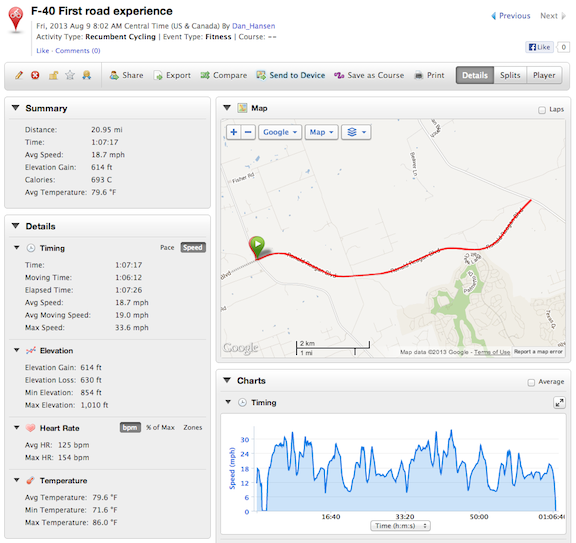

F-40 First road ride
09 Aug 2013
Well, I could not stand it any longer, this morning I got up early and took the F-40 in the minivan out to a remote section of smooth, wide road to see what it could do!
Without even trying hard, and riding the brakes a lot, I got a personal best on a Strava segment and became number 7 on the KOM for a 5.2 mile segment at 23.3 mph.
Still learning how to ride this thing. Winds were a steady at 13 mph so I just had to watch for breaks in the trees where the wind would accelerate through. Kept hitting the brakes every time the speed went above 25 mph - which was often.
I did not like the windshield - it is coming off. I did not like the helmet mounted mirror - time to mount one to the fairing.
With the fairing on the bike is BIG. I have not yet found a quick, convenient method of getting it into and out of the minivan.
http://connect.garmin.com/modern/activity/355930593
http://app.strava.com/activities/73356528

